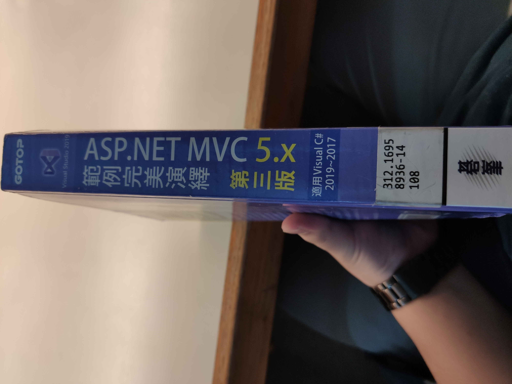
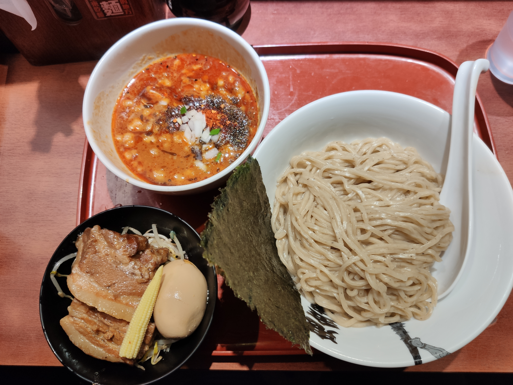

圖書館行
吃完中餐後，就搭捷運到 中正紀念堂站，去 國家圖書館
許久沒去了，有一種另類的感動
進場如果有背背包的話，警衛會看你的包包有沒有到飲料或是書，白開水跟筆記本是可以帶的
由於是久違的回歸，就看了一本跟.Net MVC相關的書，想充實一下基礎

都在看這本，從13點40看到16點40，大概翻了一半，又更了解Visual Studio了。
拉麵晚餐
之後就去吃 鼎鼎大名的 鬼金棒 中山店，話說 那裡就開著兩間店，左右兩邊相鄰著，實在不知道要排哪間阿，
後來看到比較黑有鬼金棒那間 門口螢幕有顯示，本店只有沾麵，而我也比較想吃沾麵 就排這間了
5點15抵達時，前面約有10位在排隊中，頗有人氣的阿

門口有一根棒狀物
本次的食用證明~由於是第一次這種辣拉麵，怕會承受不住，就只點了中麻小辣

進去了~座位一覽，衛生紙盒上有怕大家佔位太久的警示標語

正反面個拍一張~ 真的好看
食評：中麻小辣，不會辣，花椒味很香，我吃得當下胃口很好，應該有到目前為止，吃過的拉麵也能排進前三名
吃完離開店家後，兩間店門口都是大排長龍，只能說，能讓大家這樣排隊，真的是有理由的